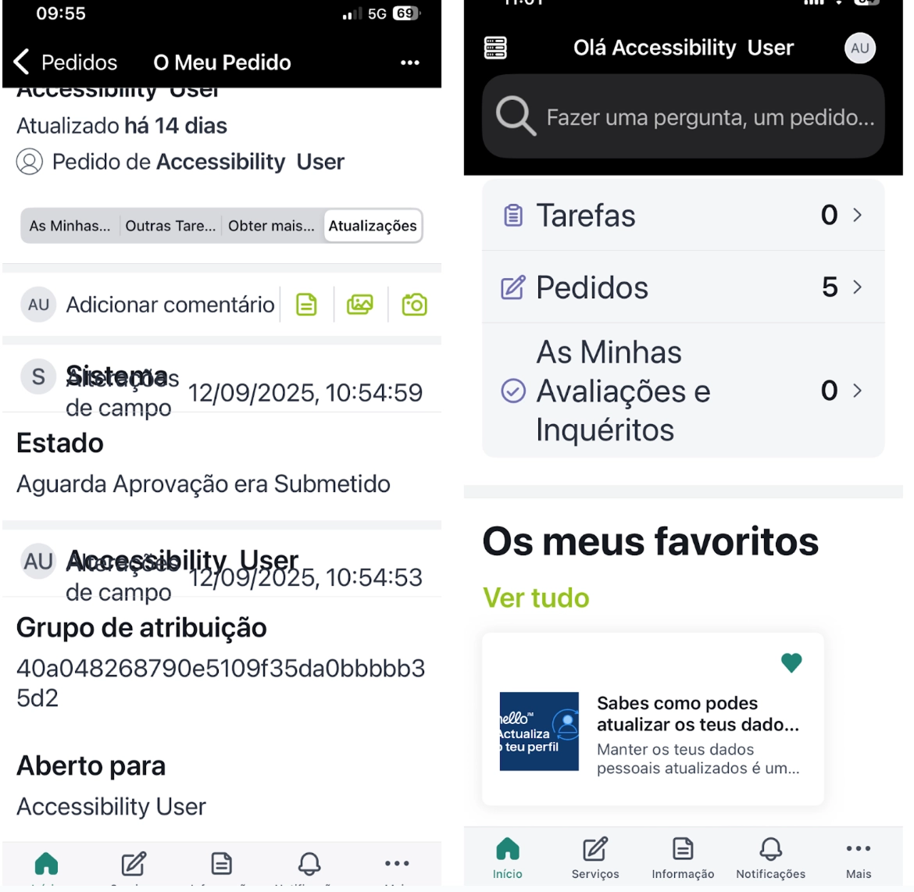

Government / Public Sector
WCAG 2.2
Accessibility Audit
Challenge
A public-sector organisation needed a rigorous audit of complex digital systems — web and mobile — to identify real barriers for users and reduce legal, technical, and operational risk ahead of EAA 2025 compliance deadlines.
The systems had never been formally assessed for accessibility. Without a structured audit, the organisation had no way to prioritise fixes, estimate remediation effort, or demonstrate conformance to regulators.


My Role
- WCAG 2.2 audit at Level AA across web and mobile surfaces
- Manual and heuristic analysis of critical user flows
- Keyboard navigation and screen reader testing (VoiceOver)
- Issue identification and severity classification
- Prioritisation by user impact and remediation effort
- Actionable recommendations for design and development teams
Discovery &
Research
Systematic analysis of the full systems revealed four categories of systemic failure recurring across both platforms:
-
Colour reliance. State, severity, and status communicated through colour alone, with no text or icon alternatives, failing users who are colour blind or using high-contrast modes.
-
Missing semantic relationships. Labels and their corresponding values were visually paired but had no programmatic association, making screen readers announce content out of context.
-
Inconsistent focus states. Keyboard focus indicators were absent or suppressed on the majority of interactive elements, blocking keyboard-only and switch access users entirely.
-
Inaccessible interactive components. Custom controls — filters, status toggles, expandable rows — had no accessible name, role, or value, making them invisible to assistive technologies.
Design
Decisions
The audit was structured around critical flows rather than page-by-page coverage — the areas where an accessibility failure would have the highest real-world consequence.
Testing covered:
- Critical flows: login, task creation, filtering, status management
- System states and feedback: loading, empty, error, success
- Keyboard navigation: tab order, focus traps, skip links
- Screen reader pass with VoiceOver: announcements, landmarks, form labels
Each issue was documented with four components designed to make remediation actionable: evidence (screenshot or recording), the specific WCAG 2.2 criterion, the real user impact, and a concrete recommendation written for both designers and developers.
Issues were classified by severity — critical (blocks access), major (significantly degrades experience), and minor (reduces quality) — and ordered into a prioritised remediation roadmap.
Outcome &
Impact
- 400+ WCAG 2.2 issues identified and documented across web and mobile systems
- All issues prioritised by severity and real user impact, not just technical category
- Remediation roadmap delivered to development teams — actionable without further interpretation
- Direct reduction of EAA 2025 legal non-compliance risk
- Audit methodology applied structured manual testing complemented by heuristic analysis, covering what automated tools miss
- Each documented issue demonstrates the ability to diagnose complex systems, reason about user impact, and communicate clearly across design and engineering